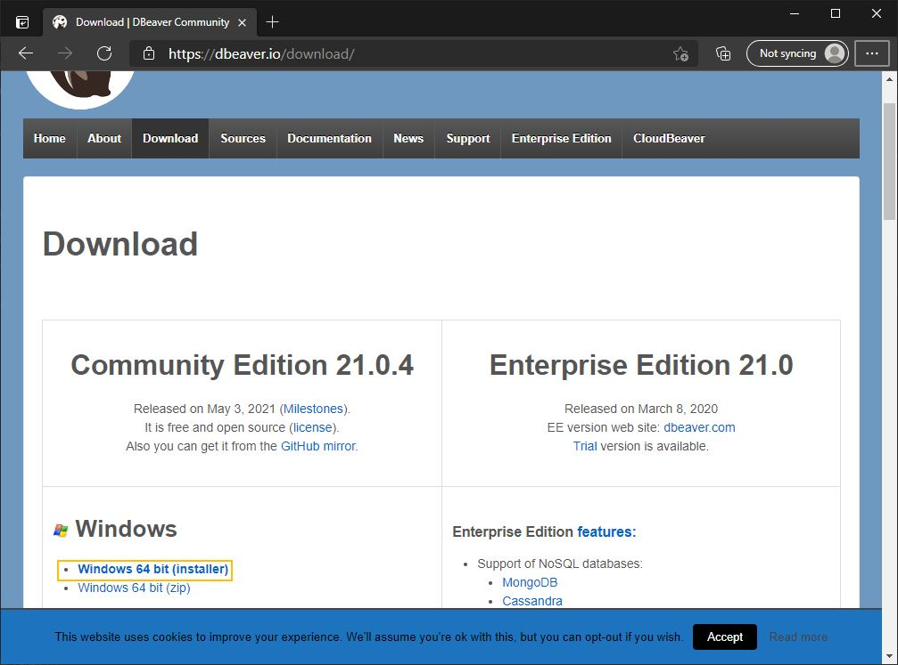
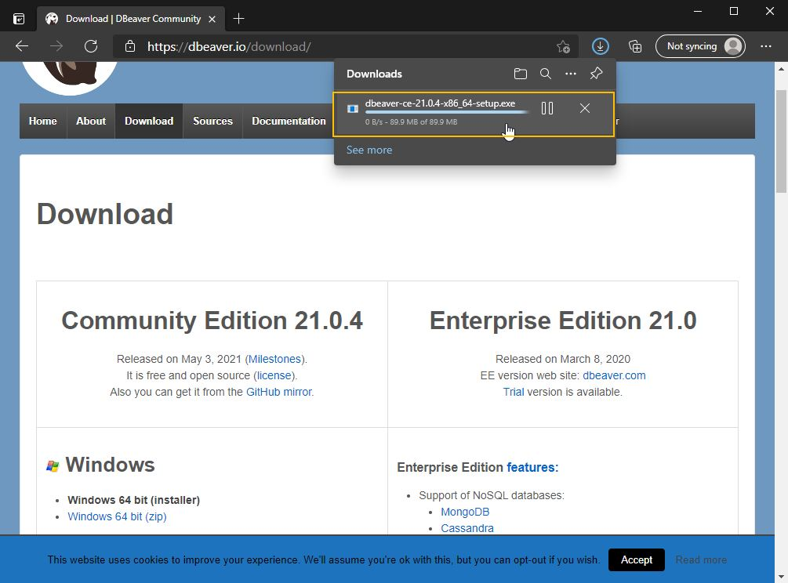
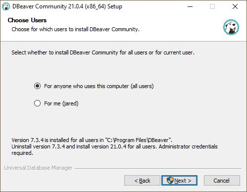
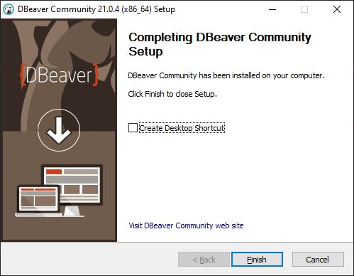
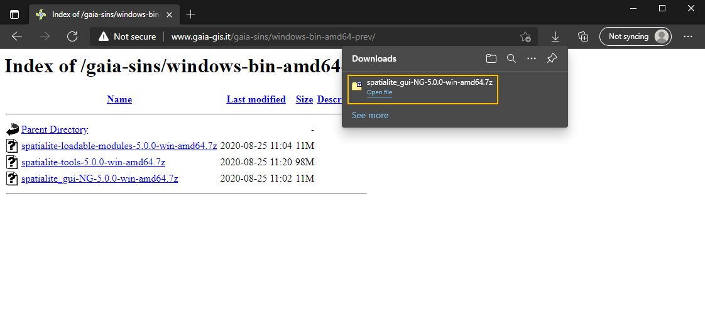
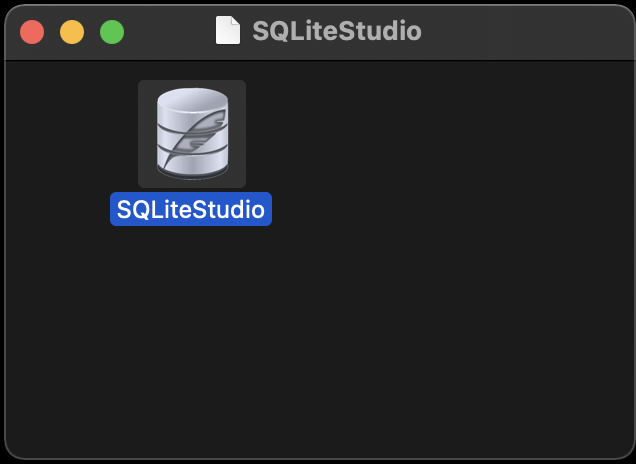
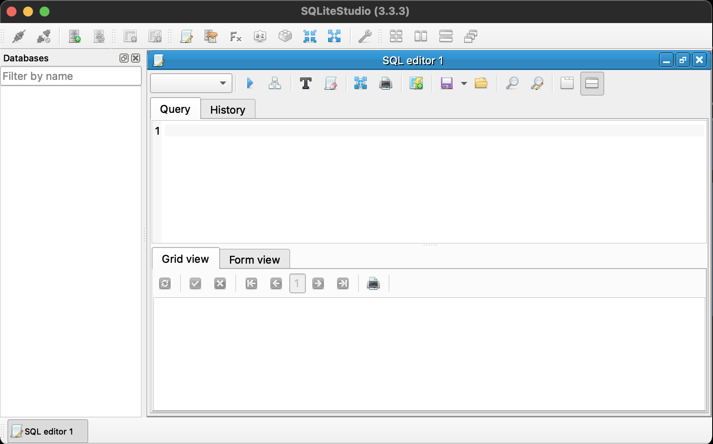
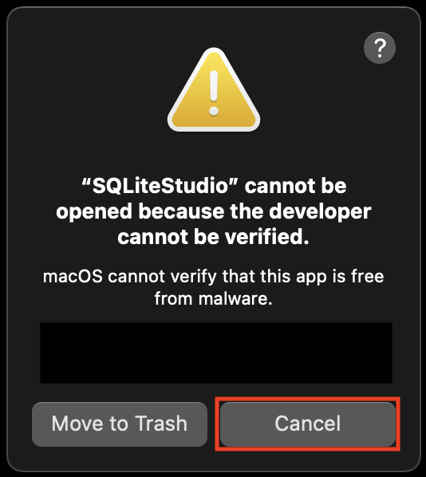
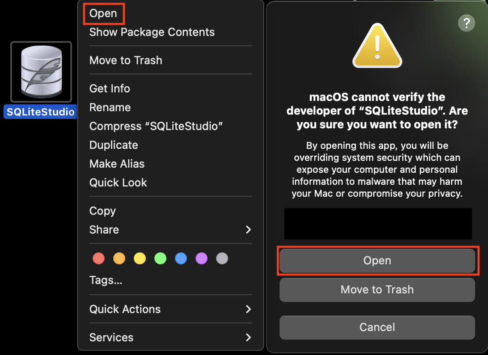

4 SQL and Database Tools
4.1 DBeaver (SQL Database Viewer)
4.1.1 Introduction
DBeaver is a free and open source tool to inspect and manipulate databases of nearly any type. It has versions for Windows, Mac, and Linux. This can offer a more intuitive method for people new to databases to interact with their data, and create code to query data for other uses. Note that DBeaver does not create a database, it only allows you to view and interact with one.
4.1.2 DBeaver on Windows
First navigate to the download page on DBeaver’s website. Scroll down and click on the installer link to download it.

After the install finishes, click on the executable to launch the installer.

Once you select your language, the installer will prompt you to close all other applications, and hit next. On the following page, accept the license agreement by clicking I Agree.

On the next page, select if you would like to install DBeaver for all users on your machine, or just you. In most cases it is fine to install for everyone.

Depending on your selection, the installer may need to re-start with administrator privileges. Enter your previous options again until you reach the “Choose Components” page. Once here, you can leave the default settings and click Next.

The next page will ask where you would like to install DBeaver. The default location should work for most people, click Next to continue. The same is the true of the next page regarding the start menu location, you can click Install to start the installation process.

Once the installation is complete, you can click Finish to exit the installer.

4.1.4 Installation troubleshooting
If you are not able to successfully install DBeaver on your own, please attend DataLab’s Virtual Office Hours. Click here for more information and to receive a Zoom link.
4.2 DB Browser
4.2.1 Introduction
DB Browser is an ultra lightweight viewer for SQLite databases. It is made to allow those familiar with spreadsheets to work more easily with the common SQLite format. However, that is all that it does; you cannot use it on other database types.
4.2.2 DB Browser on Windows
First head to the DB Browser download page, and select the version that matches your system. On Windows this is most likely the 64-bit standard installer.

Once the download has finished, start the installer from the browser or your download location.

Once you have started the installer, press the Next button to continue.

On the next screen, accept the license agreement and press Next. The following page will ask you if you would like to place shortcuts anywhere. Desktop will place icons on your desktop, while Program Menu will add options to your right click menu. You can choose to have these if you wish, I will not. Press Next once you have decided.

On the following screen, you will be asked to select what components you want to install and where. You can safely keep the defaults and continue. Press Install on the following page.

One the installation is complete, you can press Finish to close the installer!
4.2.3 Verifying your install
To test everything is working launch DB Browser from the windows menu or from the install location (C:\Program Files\DB Browser for SQLite by default).
4.2.4 Installation troubleshooting
If you are not able to successfully install DBeaver on your own, please attend DataLab’s Virtual Office Hours. Click here for more information and to receive a Zoom link.
4.3 SpatiaLite GUI
4.3.1 Introduction
SpatiaLite GUI is a free, open-source tool for storing and working with spatial data in a SQLite database.
4.3.2 SpatiaLite GUI on Windows
First navigate to the SpatiaLite download page, and look for “MS Windows binaries.” Look for the version title “previous stable version” and click the link that matches your machine (most likely 64bit)1.

On the following page, click the link to download spatialite_gui-NG-X.X.X-win-amd64.7z. Once it has finished downloading, open the 7-zip archive from yuor browser or your download location. You will need 7-zip installed to open this archive. If you do not already have it installed, please see our guide on installing 7-zip in out “other Software” guide.

Once the archive is open, simply drag the containing folder to your desktop or other location of choice.

You can now run SpatiaLite by opening the folder, and running the spatialite_gui executable, no instillation needed.

4.3.4 Installation troubleshooting
If you are not able to successfully install DBeaver on your own, please attend DataLab’s Virtual Office Hours. Click here for more information and to receive a Zoom link.
4.4 SQLiteStudio
4.4.1 Introduction
SQLiteStudio is a free, open source, multi-platform desktop application for browsing and editing SQLite database files.
4.4.2 SQLiteStudio on Mac
Navigate to the download page on SQLiteStudio’s website and click Download.

Once the download finishes, click the .dmg file.

Drag and drop the SQLiteStudio app to your Applications folder or other location of choice.

Double-click the SQLiteStudio app and it will open to its home screen.

4.4.2.1 Troubleshooting
If you receive the warning message, “SQLiteStudio cannot be opened because the developer cannot be verified.”
Click Cancel.

Right click the SQLiteStudio app and click Open. Mac will prompt, “Are you sure you want to open it?”
Click Open and SQLiteStudio will open to its home screen.

4.4.3 SQLiteStudio on Windows 10
Navigate to the download page on SQLiteStudio’s website and click Download.

Once the download finishes, click the .zip folder.

Click Extract all in File Explorer and select your Desktop to extract the files to or other location of choice.


The files will be extracted into a folder named SQLiteStudio.
Click into the SQLiteStudio folder and find SQLiteStudio.exe.
Double-click SQLiteStudio.exe and it will open to its Home Screen.


As of writing, the GUI is not available on the most recent release. You may want to check there as well, and download that if possible.↩︎